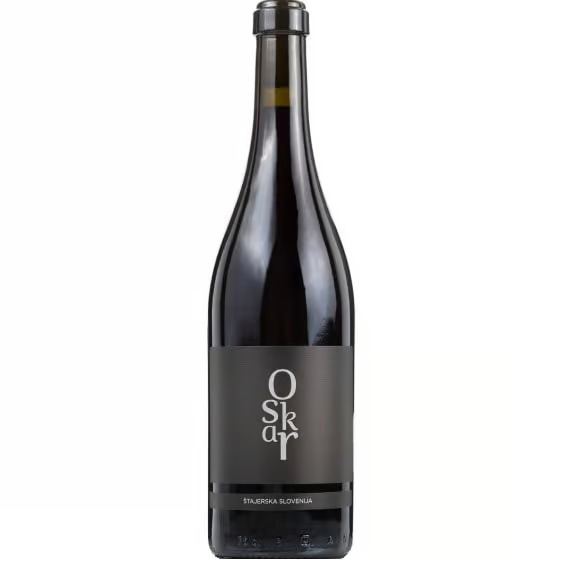

Rdeča vina posestva Vina Oskar so bogata, polnega okusa in toplega karakterja. Pridelana so iz skrbno izbranega, zrelega grozdja ter negovana s potrpežljivostjo in spoštovanjem tradicije.

Mehko in sadno rdeče vino z bogatimi notami zrelih sliv, temnih češenj ter nežnim pridihom čokolade in žametnimi tanini.
NaročiKraljevska rdeča sorta z rubinastim odtenkom. Izrazita aroma gozdnih jagod, malin in finih začimbnih tonov zorenja v lesu.
Naroči